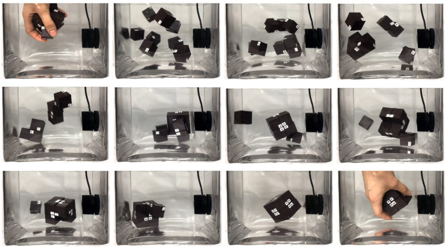

Spider becomes gripper, its necrobotics
Robot arms and grippers do important work every hour of every day. They’re used in production lines around the world, toiling virtually ceaselessly outside of their designated maintenance windows. They’re typically built out of steel, and powered by brawny hydraulic systems. However, some scientists have gone for a smaller scale approach that may horrify the squeamish. They’ve figured out how to turn a dead spider into a useful robotic gripper. The name of this new Frankensteinian field? Why, it’s necrobotics, of course!
Incorporating nanoparticles into a porous hydrogel to propel an aquabot with minimal voltage
A team of researchers from Korea University, Ajou University and Hanyang University, all in the Republic of Korea, has created a tiny aquabot propelled by fins made of a porous hydrogel imbued with nanoparticles. In their paper published in the journal Science Robotics, the group describes how the hydrogel works to power a tiny boat and reveals how much voltage was required. Scientists and engineers have been working for several years to build tiny, soft robots for use in medical applications and have found that hydrogels are quite suitable for the task. Unfortunately, such materials also have undesirable characteristics, most notably, poor electro-connectivity. In this new effort, the researchers took a new approach to making hydrogels more amenable for use with electricity as a power source—adding conductive nanoparticles.
A system that allows users to communicate with others remotely while embodying a humanoid robot
Recent technological advancements are opening new and exciting opportunities for communicating with others and visiting places remotely. These advancements include telepresence robots, moving robotic systems that allow users to virtually navigate remote environments and interact with people in these environments. Researchers at Hanyang University and Duksung Women's University in South Korea have recently developed a promising telepresence system based on a humanoid robot, a head mounted display, a motion transporter, a voice transporter, and a vision transporter system.
Tracking trust in human-robot work interactions
A team of researchers from Korea University, Ajou University and Hanyang University, all in the Republic of Korea, has created a tiny aquabot propelled by fins made of a porous hydrogel imbued with nanoparticles. In their paper published in the journal Science Robotics, the group describes how the hydrogel works to power a tiny boat and reveals how much voltage was required. Scientists and engineers have been working for several years to build tiny, soft robots for use in medical applications and have found that hydrogels are quite suitable for the task. Unfortunately, such materials also have undesirable characteristics, most notably, poor electro-connectivity. In this new effort, the researchers took a new approach to making hydrogels more amenable for use with electricity as a power source—adding conductive nanoparticles.
Please click on an article in the slide show for more information
More articles you might like
Magnetic sensors track muscle length
Using a simple set of magnets, MIT researchers have come up with a sophisticated way to monitor muscle movements, which they hope will make it easier for people with amputations to control their prosthetic limbs.
Reprogrammable materials selectively self-assemble
While automated manufacturing is ubiquitous today, it was once a nascent field birthed by inventors such as Oliver Evans, who is credited with creating the first fully automated industrial process, in flour mill he built and gradually automated in the late 1700s.
Tiny particles work together to do big things
Taking advantage of a phenomenon known as emergent behavior in the microscale, MIT engineers have designed simple microparticles that can collectively generate complex behavior, much the same way that a colony of ants can dig tunnels or collect food.
Breaking through the mucus barrier
One reason that it’s so difficult to deliver large protein drugs orally is that these drugs can’t pass through the mucus barrier that lines the digestive tract. This means that insulin and most other “biologic drugs” — drugs consisting of proteins or nucleic acids — have to be injected or administered in a hospital.
MIT engineers build a battery-free, wireless underwater camera
Scientists estimate that more than 95 percent of Earth’s oceans have never been observed, which means we have seen less of our planet’s ocean than we have the far side of the moon or the surface of Mars.
More article information
Please select an article in the slide to show the information